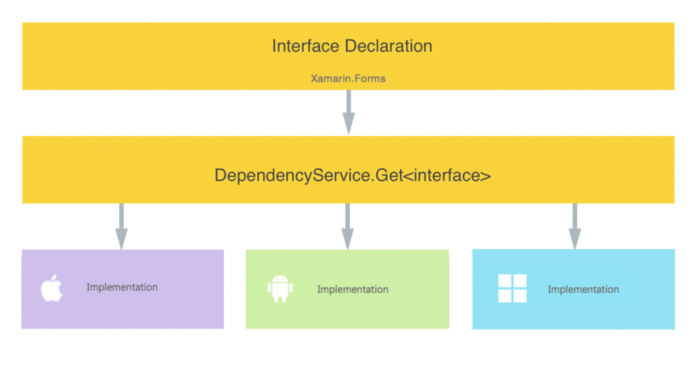
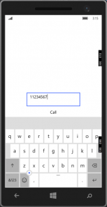
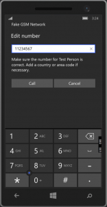
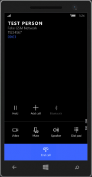

前回はXamarin.Forms.Themesをレビューしました。
Problem
Xamarinにおいて、UIはXamarin.FormsをSharedまたはPCLプロジェクトに定義することで共通化を図っています。 しかしながら、デバイス固有の機能、例えば電話、カメラ、ファイル選択、指紋認証などは共通化されていません。 そのために、XamarinではXamarin.Forms.DependencyServiceクラスを利用して、共通コードからデバイス固有の機能にアクセスします。 Introduction to DependencyServiceに詳しく書いてありますが、ポイントは各プロジェクト (iOS、Android、UWP、Windows Phone)で同じinterfaceを実装し、その実装をDependencyServiceクラス経由で取得し、呼び出しているだけです。要するに、Dependency Injection (依存性の注入) です。 
概要図 (https://developer.xamarin.com/guides/xamarin-forms/dependency-service/introduction/より引用)
今回は電話を使ってみようと思います。 今回のソースです。 https://github.com/takuya-takeuchi/Demo/tree/master/Xamarin.Forms.Portable6 ただし、iOS Simluatorは電話のテストをサポートしていません。何故でしょう？
Resolution
オープンソースでデバイス固有の機能をライブラリとして提供しているパッケージがあります。
Xamarin.Forms用の、クロスプラットフォーム向けに個別対応されたコントロール群とヘルパーのライブラリとのこと。 ですが、UWPの対応が良くない、というか大量にコメントアウトしてあって、どうも一時対応を休止しているような感じです。 また、最新版のソースだと、iOSのビルドに問題があるため、Androidしか使えない状態なので、自分で実装します。
{kind=link}
PCL
最初にPCLの説明をします。
Serviceのinterface
3つのデバイスの固有機能にアクセスするためのinterfaceであるIPhoneServiceを定義します。 IPhoneService.cs [code lang=”csharp”] namespace Xamarin.Forms.Portable6.Services { public interface IPhoneService {
void ShowUI(string dialNumber, string displayName);
} } [/code] 各プロジェクトはPCLを参照しているので、このinterfaceを実装して各固有機能へのアクセスを提供します。
ViewModel
次に、ViewModelを作ります。 簡単に、電話番号の入力フィールドと通話ボタンを押下した際のコマンドを提供します。 ただし、通話と言うよりも、通話のためのUIを呼ぶだけです。 PhonePageViewModel.cs [code lang=”csharp”] using System.Windows.Input; using Microsoft.Practices.Prism.Mvvm; using Xamarin.Forms.Portable6.Services;
namespace Xamarin.Forms.Portable6.ViewModels { public class PhonePageViewModel : BindableBase {
private readonly IPhoneService _PhoneService;
public PhonePageViewModel() { _PhoneService = DependencyService.Get(); }
private string _Number; public string Number { get { return this._Number; } set { this.SetProperty(ref this._Number, value); } }
private string _DisplayName; public string DisplayName { get { return this._DisplayName; } set { this.SetProperty(ref this._DisplayName, value); } }
private ICommand _CallCommand; public ICommand CallCommand { get { return _CallCommand ?? new Microsoft.Practices.Prism.Commands.DelegateCommand( () => { this._PhoneService.ShowUI(this.Number, this.DisplayName); }, () => true); } }
}
} [/code] DependencyService.GetメソッドでIPhoneServicdインターフェースを実装したクラスのインスタンスを取得しています。 インスタンスの登録は、各プロジェクトのスタートアップコードで実行します。 他に特筆するべきことは無いはずです。
View
最後にViewです。 Xamarin.Formsではテキスト入力フィールドはEditorです。 ちょっとすぐには思いつかない名前でした。 PhonePage.xaml [code lang=”xaml”]
iOS
いよいよ固有デバイス機能の実装です。 前述の通り、PCLで定義したインターフェースを実装します。 PhoneService.cs [code lang=”csharp”] using Foundation; using CoreTelephony; using Foundation; using UIKit; using Xamarin.Forms.Portable6.iOS.Services; using Xamarin.Forms.Portable6.Services;
[assembly: Xamarin.Forms.Dependency(typeof(PhoneService))] namespace Xamarin.Forms.Portable6.iOS.Services { public sealed class PhoneService : IPhoneService { public void ShowUI(string dialNumber, string displayName) { var ctTelephonyNetworkInfo = new CTTelephonyNetworkInfo(); var carrier = ctTelephonyNetworkInfo.SubscriberCellularProvider; if (carrier?.IsoCountryCode == null) { return; }
var nsUrl = new NSUrl(new System.Uri($”tel:{dialNumber}”).AbsoluteUri); var result = UIApplication.SharedApplication.OpenUrl(nsUrl); } }
} [/code] iOSの固有APIはここでは無視しますが、重要なのは名前空間の上にあるassembly属性です。 ここで、依存性のあるクラスを登録します。つまり、PhoneSerivceクラスを登録するので、前述のPhonePageViewModelクラスでIPhoneSerivceインターフェースを実装したクラスのインスタンスを取得できるわけです。 ただ、個人的には、Prismのように動的に登録できたりしないのか、という疑問が残ります。 この記述だと、デバイスのバージョンに応じて実装クラスを変更するようなことができません。
Android
Androidです。 PhoneService.cs [code lang=”csharp”] using Android.Content; using System.Linq; using Android.Content; using Android.Net; using Android.Telephony; using Xamarin.Forms.Portable6.Droid.Services; using Xamarin.Forms.Portable6.Services;
[assembly: Xamarin.Forms.Dependency(typeof(PhoneService))] namespace Xamarin.Forms.Portable6.Droid.Services { public sealed class PhoneService : IPhoneService { public void ShowUI(string dialNumber, string displayName) { var number = PhoneNumberUtils.FormatNumber(dialNumber.Trim(),”JP” ); var intent = new Intent(Intent.ActionDial, Uri.Parse(“tel:” + number)); if (!IsIntentAvailable(intent)) { return; }
intent.SetFlags(ActivityFlags.NewTask); Android.App.Application.Context.StartActivity(intent); }
public static bool IsIntentAvailable(Intent intent) { var context = Forms.Context; var packageManager = context.PackageManager;
var list = packageManager.QueryIntentServices(intent, 0) .Union(packageManager.QueryIntentActivities(intent, 0));
if (list.Any()) return true;
var manager = TelephonyManager.FromContext(context); return manager.PhoneType != PhoneType.None; } }
} [/code] これも同じですね。ちょっとAndroidは面倒です。 iOSもそうですが、url形式で機能の呼び出しを制御しているのは正直あまり好きではないです… 今回のコードで、プロジェクトのプロパティから、Required permissionsにて、CALL_PHONEにチェックを入れる必要は無いです。 Intent.ActionCallの場合はチェックが必要です。 今回、Androidは残念ながらテストできませんでした。PhoneTypeが常にNoneのため、StartActivityまで到達しませんでした。 強制的に呼び出しても例外を出して落ちます。何故だ。
UWP
UWPもといWindows Mobile 10です。 PhoneService.cs [code lang=”csharp”] using Xamarin.Forms.Portable6.Services; using Xamarin.Forms.Portable6.UWP.Services;
[assembly: Xamarin.Forms.Dependency(typeof(PhoneService))] namespace Xamarin.Forms.Portable6.UWP.Services {
public sealed class PhoneService : IPhoneService { public void ShowUI(string dialNumber, string displayName) { Windows.ApplicationModel.Calls.PhoneCallManager.ShowPhoneCallUI(dialNumber, displayName ?? “Test Person”); } }
} [/code] 他と違ってシンプルです。
実行してみる
iOS
{kind=link}
起動直後
Android
{kind=link}
起動直後
UWP
[wc_row][wc_column size=”one-third” position=”first”] 
{kind=link}
起動直後
[/wc_column][wc_column size=”one-third”] 
{kind=link}
Callボタン押下後
[/wc_column][wc_column size=”one-third” position=”last”] 
{kind=link}
Call!!
[/wc_column][/wc_row]
Conclusion
全ての機能をテストしたかったのですが、まさかAndroidまで動かないとは… やはり実機が必要ですね…でもiPhoneは実機へのデプロイはお金が必要ですし…わざわざAndroidを買うのも…
Source Code
https://github.com/takuya-takeuchi/Demo/tree/master/Xamarin.Forms.Portable6